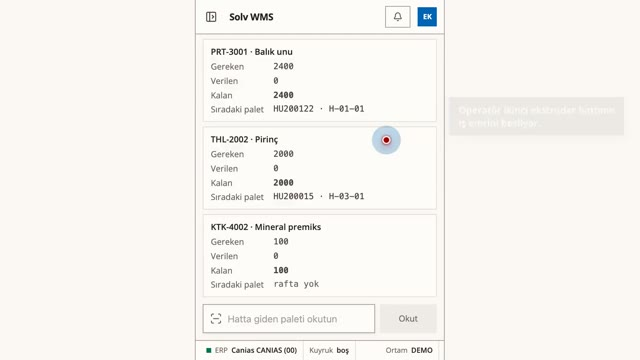
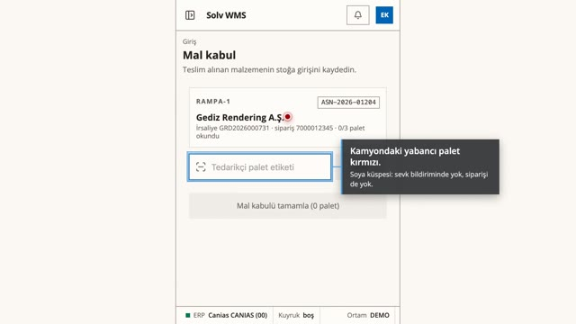
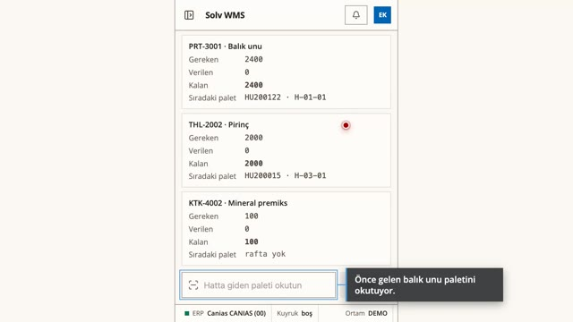
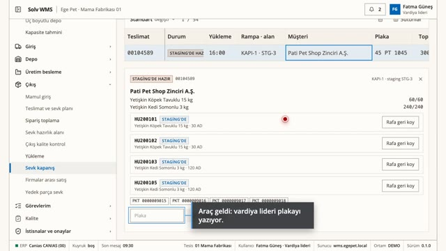
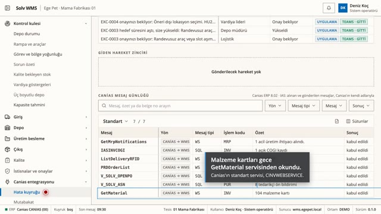

Solv WMS · Canias
Kural motorlu depo yönetimi, Canias ERP ile entegre: hammadde kabulünden yükleme kapısına, el terminali, tablet ve ofis aynı programda.
Videoları bilgisayarda, büyük ekranda ve tam ekran izlemenizi öneririz.
-

Genel bakış -

Canias ile hammadde kabulü Canias'tan gelen eksik malzeme kartı kapıda durur, istisnayla açılır. Rampada paletler okutulur, her palet için Canias'a satınalma girişi gider (WMSPurchaseSave), kilitli kayıt kuyrukta kendiliğinden yeniden denenir. -

Son kullanma tarihiyle hat besleme Varsayılan çıkış sırası FEFO: operatör önce gelen paleti okutunca sistem tarihi daha yakın olanı ister. Hatta giden palet iş emrine bağlanır, Canias'a üretime çıkış hareketi gider. -

Yükleme kapısı ve sevk belgesi Toplayıcı tarihi en yakın paletleri sevk hazırlığa alır. Plaka sevk planıyla eşleşince kontrol listesi açılır, kapıda her palet okutulur, mühür numarasıyla liste tamamlanır, Canias sevk belgesini keser (WMSDeliverySave) ve e-irsaliye arkasından gider. -

Canias arayüzü ve iş adımı tanımları Her alışveriş Canias'ın kendi adıyla: standart WMS web servisleri yazar, SQL görünümleri okunur, tesisin ListDeliveryRFID servisi sevk siparişlerini getirir. Her iş adımının tanımında Canias'a ne yazılacağı yazılı.
Demo ortamı: Canias bağlantısı mock, firmalar ve veriler kurgu. Menüde soluk görünen ekranlar kapsamda, bu demoda kapalı.
Solv · solv.com.tr